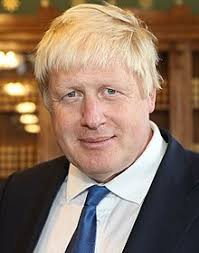

UK Now Threatens to Close Its Borders Immediately After Brexit
Prime Minister Boris Johnson on Monday implored Germany and France to pave the way for a Brexit compromise, while again reassuring that the UK was ready to leave the European Union without an agreement on 31st October.Johnson’s government said Monday that it would 'immediately' end the free movement of people in case of a Brexit without agreement on 31st October, a rather hard position compared to the one from the previous regime.

Former Prime Minister Theresa May, succeeded by Johnson on 24th July, provided for a 'transition period' even in the absence of a divorce agreement with the EU, allowing Europe citizens to visit the UK to work or study without any special legal requirements.'The free movement as it currently stands will end on 31st October when the UK leaves the EU,' said a 10 Downing Street spokeswoman.
'For example, we will immediately introduce more stringent crime rules for people entering the UK,' she added, adding that other immediate changes for a new system were 'in the process of being developed.'She recalled that Boris Johnson wanted to introduce a points system, modeled on Australia’s.
'Generalized discrimination'
The3million, an association defending the interests of some 3.6 million European citizens residing in the United Kingdom, took offense at the announcement.'It’s irresponsible, and it opens the door to widespread discrimination,' they tweeted.According to the government, by the end of July more than one million Europeans had obtained 'permanent resident' status to keep residing in the UK even after Brexit.
In early August, the Prime Minister announced a plan to issue accelerated visas to attract the 'best brains' and allow the UK to 'continue to be a scientific superpower' after Brexit.He also promised to protect the rights of European citizens settled in the United Kingdom to continue to live in the country, even in the case of 'no-deal.'The free movement of persons enables European citizens to move and reside freely within the E.U. countries.It is one of the four fundamental freedoms of the single market, with the free movement of capital, goods, and services.
Make 'compromises'
'We will be ready to leave on 31st October, whether there is agreement or not,' Boris Johnson told the press.While he is expected in Berlin Wednesday and Paris Thursday, he called on Germany and France to make 'compromises.'
'I hope that they will compromise.They have seen that the U.K. parliament has three times rejected the withdrawal agreement, the backstop just doesn’t work, it’s not democratic, and I hope that they will see fit to compromise, but in the meantime, we are ready to come out on 31st October,' Johnson said.
'I want an agreement.We’re ready to work with our friends and partners to get a deal, but if you want a good deal for the UK, you must simultaneously get ready to come out without one,' said Johnson, while in Truro, South West England.
[bsa_pro_ad_space id=4]
Posted On: 2019-08-19T00:00:00
Posted By: Vincent Ferdinand



Content Date: 2019-08-19
Download Date: 2021-07-10
Document ID: L0C04F09I